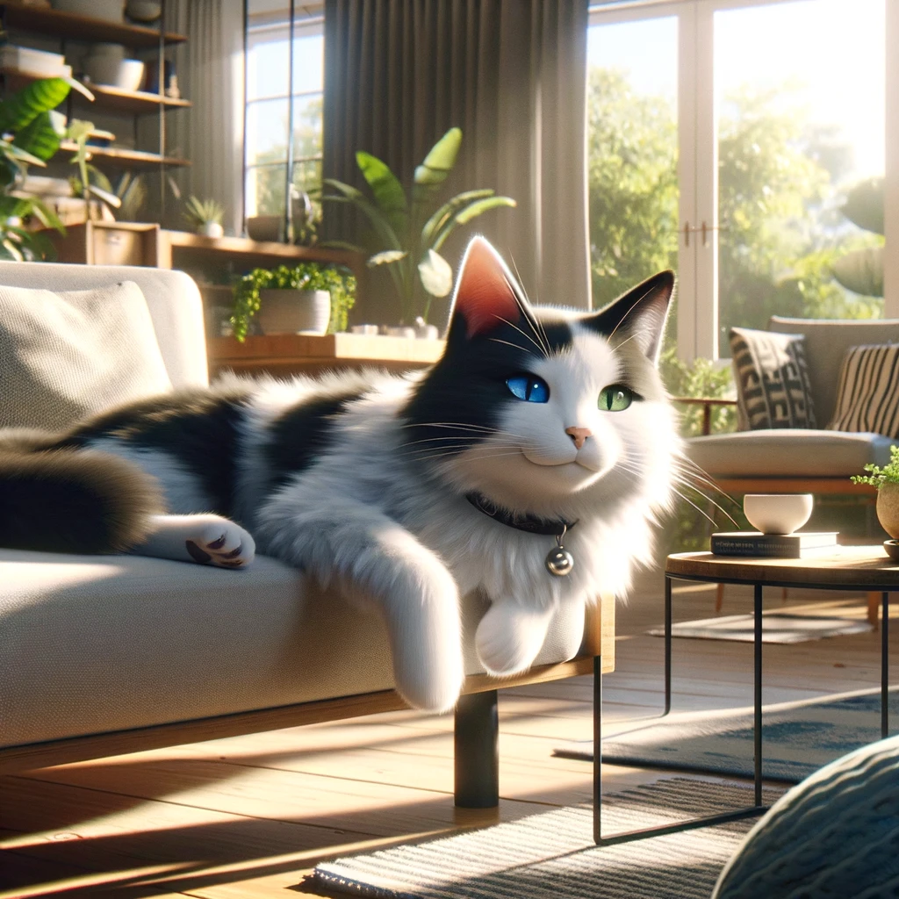
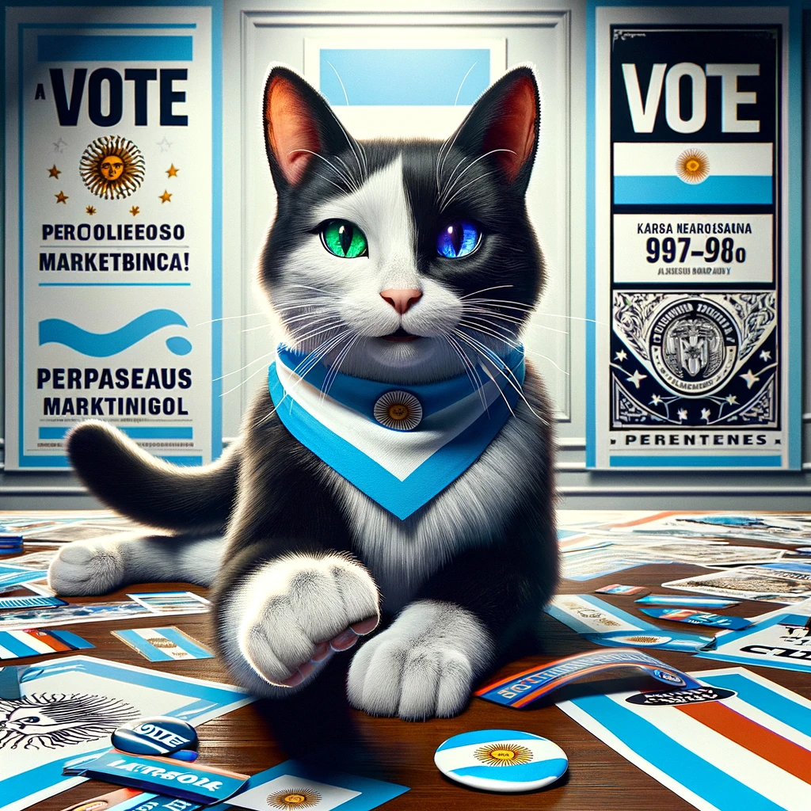

La vida de Glottis

En las pintorescas calles de Monte Caseros, Corrientes, con sus vibrantes ritmos de tango y el espíritu inconfundible de Argentina, nació un felino con aspiraciones tan grandes como su personalidad: Mishu. Este gato bicolor, con su pelaje elegantemente dividido entre el negro más profundo y el blanco más puro, captura la mirada de todos no solo por su apariencia, sino también por sus singulares ojos de colores distintos, un fenómeno conocido como heterocromía que refleja su singularidad.
Mishu no es un gato cualquiera. Con un interés peculiar en el tango, no es raro verlo meciéndose al compás de un bandoneón imaginario, o siguiendo con la mirada las monedas que tintinean al ritmo de la música. Pero más allá de su amor por la cultura y el ocio, Mishu alberga una ambición insólita: convertirse en Presidente de la Nación Argentina
Con una campaña no oficial que ya ha conquistado los corazones de sus conciudadanos felinos y humanos por igual, Mishu se está posicionando como un candidato de cambio, prometiendo una gestión llena de siestas reparadoras y una política de 'más juguetes para todos'. Con su carisma innato y su mirada perspicaz, Mishu está listo para saltar de los tejados de Monte Caseros a la Casa Rosada.